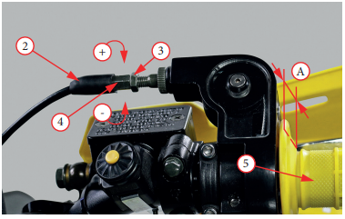

Проверка свободного хода
Рукоятка акселератора
5 должна иметь свободный
ход «А» 3–5 мм. При необходимости отрегулируйте до этого
значения
Регулировка
Регулировка проводится с помощью
регулятора
4, расположенного на рукоятке акселератора. Для регулировки:
- Сдвиньте в сторону резиновый
пылезащитный чехол
2
- Ослабьте
контргайку
3
- Вращайте
регулятор
4: для уменьшения свободного хода в
направлении « – »; для увеличения свободного хода регулятора в направлении «+»
- Чтобы убедиться в плавности хода, выкрутите на себя
рукоятку
5 до упора, и после того как вы ее отпустите, она
должна вернуться в изначальное положение под действием возвратной пружины дроссельной заслонки.
- Проверьте состояние тросов, идущих от ручки управления дроссельной заслонкой к карбюратору. Замените трос при наличии
на нем заломов, задиров и иных повреждений
- Проверьте трос на натяжение и перегибы во всех положениях руля
- Смажьте трос, для предотвращения его преждевременного износа или коррозии
- Затяните
контргайку
3 с моментом 4 Н•м